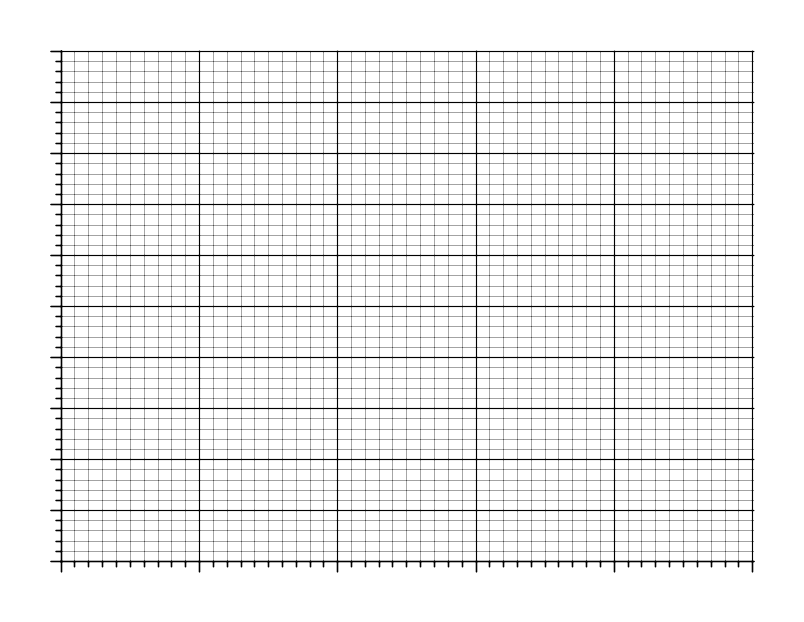

Задача 1. Пирамида от цилиндри.

Три еднакви еднородни цилиндри, всеки с радиус r g и маса m, са поставени върху хоризонтална повърхност и се допират един до друг, както е показано на фигурата. Земното ускорение е g. а) Нека няма триене на цилиндрите с повърхността r m и помежду им. Първоначално цилиндрите са в покой. Намерете ускоренията a1 на горния и a2 на страничните цилиндри в началния момент на тяхното движение. [2 т.] б) Нека коефициентът k на триене на цилиндрите с повърхността и помежду им е един и същ и е толкова голям, че цилиндрите остават в покой. Намерете интервалът от стойности на k, когато това е възможно. [2 т.] в) Нека коефициентът k на триене на цилиндрите с повърхността и помежду им е един и същ и е такъв, че цилиндрите започват да се движат, като се хлъзгат помежду си и в повърхността. Намерете ускоренията a3 на горния и a4 на страничните цилиндри в началния момент на тяхното движение. [3 т.] г) Намерете интервалът от стойности на k, когато ситуацията от подусловие в) е възможна. [3 т.]
Задача 2. Брауново движение Брауновото движение е хаотично топлинно движение на фини частици (т. нар. Браунови частици) поради случайните им удари с молекулите на обкръжаващата ги среда. Всъщност, Брауновата частица може да се разглежда като една гигантска молекула, за чието движение са в сила основните закони на молекулно-кинетичната теория. А) Сферична неразтворима Браунова частица с диаметър d = 1.0 $\mu$m и плътност $\rho$ = 1000 kg/m3 извършва Брауново движение във вода при температура T = 300 K. Оценете средната скорост на топлинно движение на частицата*. [3 т] Б) Поради случайния характер на ударите на молекулите в Брауновата частица, нейната траектория е сложна начупена линия. $\theta$ Приемете, че между два поредни удара частицата се движи праволинейно, като изминава едно и също разстояние - т. нар. RN свободен пробег l, а посоката й на движение след даден удар сключва с посоката й на движение преди удара случаен ъгъл $\theta$ между 0$^\circ$ и 180$^\circ$ l (вж. Фиг. 2.1). На какво средно разстояние ще се отдалечи Фиг. 2.1 частицата от началното си положение след голям брой удари N с молекулите на водата. Изразете отговора чрез l и N. [3 т] В) В началния момент (t = 0) три еднакви Браунови частици, подобни на частицата, описана в т. А, се намират в центъра на координатната система (Х = 0, Y = 0). Движението им се наблюдава под микроскоп, като се фотографират през интервали време $\Delta$t = 100 s, както е показано на четирите кадъра от Фиг. 2.2. Като използвате данните от снимките, оценете свободния пробег l на Брауновите частици, както и средното време $\tau$ между последователните им удари с молекулите на водата. [4 т]
1 При решаването на тази подточка можете (но не е задължително) да използвате празната координатна мрежа, дадена на Фиг. 2.3. В този случай предайте листа с построените от Вас графики заедно с останалите листа от решението!.
*Упътване към задачата. За една величина X, която приема случайни положителни стойности, можете да приемете, че , т.е. средната стойност на нейния квадрат е приблизително равна на квадрата от нейната средна стойност. В конкретната задача това приближение води до грешка от порядъка на 10% за търсените средни стойности. Физични константи. Константа на Болцман: kB = 1.38$\times$10-23 J/K.
Задача 3. Затихващи електромагнитни трептения. Кондензатор с капацитет C = 0,100 $\mu$F и соленоид (бобина) с индуктивност L = 100 mH и собствено съпротивление R = 10,0 $\Omega$ са свързани успоредно към идеален източник на напрежение с електродвижещо напрежение E = 10,0 V. Така свързани те са стояли дълго време. а) начертайте схемата и изчислете установените постоянни напрежение U0 на кондензатора и ток I0 през бобината. [1 т.] б) в момента време t = 0 източникът на напрежение се разкачва от останалата част на схемата. Пренебрегвайки съпротивлението на бобината, намерете периодът T0 на възникналите електромагнитни трептения и максималните напрежение Umax, до което се зарежда кондензатора и ток Imax , който протича през бобината. [2 т.] в) ако решението на уравнението е от тип изразете неизвестните параметри $\kappa$ и в решението чрез дадените параметри $\beta$ и $\omega_0$ в уравнението. [2 т.] г) използвайки решението от подусловие в), намерете точната (отчитайки съпротивлението R) зависимост на заряда на плочите на кондензатора от времето. Изчислете точния период T на електромагнитните трептения и началната фаза $\varphi$. [3 т.] д) изчислете времето (в секунди и брой периоди), за което енергията в трептящия кръг намалява 2 пъти. [1 т.] е) начертайте графиката на зависимостта на напрежението на кондензатора от времето. [1 т.] Загубите на енергия чрез излъчване се пренебрегват.
Полезна математика: ,
,


Фиг. 2.2
 Фиг. 2.3 (Използвайте, ако решението налага)
3